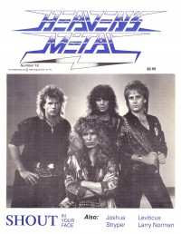

Shout
|  |
| August 1988 Heaven's Metal |
Media coverage:
- Aug 1988 in Heaven's Metal "Shoutin' In Your Face: A Talk With Ken Tamplin"
- Oct 1988 in CCM "Notebook: Shout It Out!", by Brian Quincy Newcomb
- Fall 1988 in Harvest Rock Syndicate "Metal Shop: Shout", by Sheree K. Marion
- Nov 1988 in CCM "Toys in the Band: Shout"
- Spr 1989 in Harvest Rock Syndicate "Face To Face With Shout", by Sheree K. Marion
- Aug 1989 in CCM "A SHOUT For Mortality", by Dan Milette
- Sep 1990 in CCM "Ken Tamplin's Got An Axe To Grind", by Doug Van Pelt
- Sep 1999 in HM "Shout: Where Are They Now?", by Dale Thompson
Albums & reviews:
1987: It Won't Be Long
- Mar 1988 in Heaven's Metal, by Doug Van Pelt
- 1988 in Cornerstone, by Jon Trott
- Jul 1988 in CCM, by Brian Quincy Newcomb
- Sum 1988 in Harvest Rock Syndicate, by Brian Rice
- Nov 1988 in Campus Life, by Jim Long
- Aug 1988 in Heaven's Metal, by Doug Van Pelt
- Win 1988 in Harvest Rock Syndicate, by Ernest P. Strange
- Mar 1989 in CCM, by Mark Eischer
- Fall 1989 in YouthWorker, by Mike Atkinson
- May 1992 in Syndicate, by Kevin Allison
- Jul 1992 in Heaven's Metal, by Doug Van Pelt
- Sep 1999 in HM, by David Bixler
Award Summary (Nominations / Wins)
Dove Awards- 1989 Dove Awards
- Metal Album: It Won't Be Long
- Metal Album: In Your Face
- Metal Recorded Song: "In Your Face"
Books about Shout
- "2646 Shout (L.A. CA)" in Headbangers: The Worldwide Mega-Book of Heavy Metal (Mark Hale, 1993)
- "Shout" in The Encyclopedia of Contemporary Christian Music (Mark Allan Powell, 2002)

© 2011 CMnexus. Last updated September 2019. Contact: editor -AT- cmnexus -DØT- org About